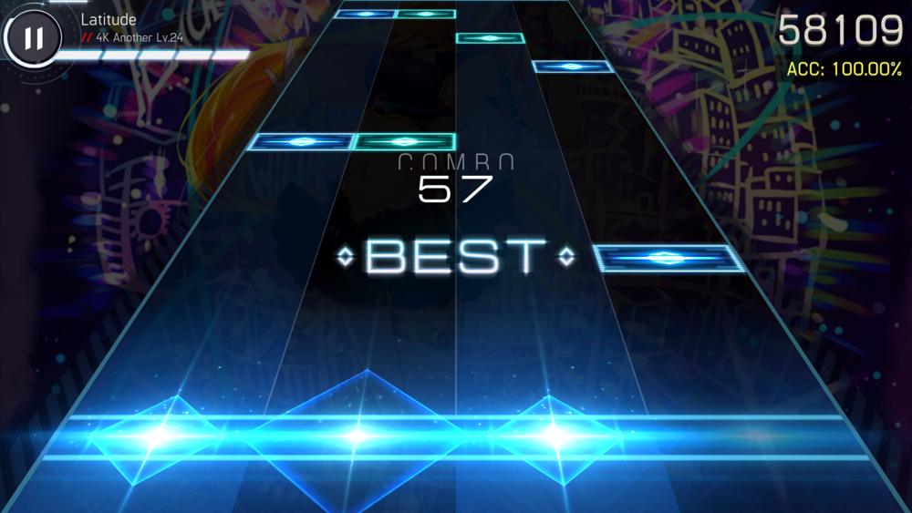

音游是什么？
音游（Music Game）是一种游戏类型。 在游戏中，玩家根据节奏与屏幕显示的内容用键盘、控制器、身体动作等进行回应。
只要带上耳机，静下心来去游玩，相信在游玩的过程中，你也能很自然的沉浸在音乐氛围中，享受随节奏击打的演奏感。
更多音游是什么？
音游（Music Game）是一种游戏类型。 在游戏中，玩家根据节奏与屏幕显示的内容用键盘、控制器、身体动作等进行回应。
只要带上耳机，静下心来去游玩，相信在游玩的过程中，你也能很自然的沉浸在音乐氛围中，享受随节奏击打的演奏感。
更多Deemo是由台湾Rayark开发的一款音乐游戏，玩法为传统下落式，除此之外还加入了些许故事剧情。
Arcaea是由英国lowiro开发的一款音乐游戏。 特点在于其三维立体的谱面，谱面在一般的下落式音游基础之上还有一条天空判定线。
Lanota是由台湾Noxy Games开发的一款音乐游戏，特点是其圆盘状的谱面，音符会会从中间向圆盘边界的判定线移动。
是由台湾Rayark开发的一款音乐游戏，特点是由上下移动的扫描线作为判定线，而音符则是会随着节奏出现在屏幕上，玩家需要在扫描线覆盖到音符时点击、长按与拖动音符。

 010-2386964
010-2386964
.png) simweixian010524@e.newera.edu.my
simweixian010524@e.newera.edu.my